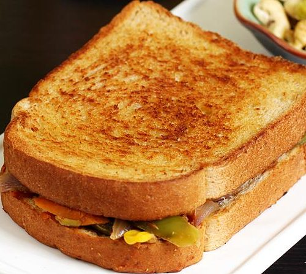

Veg Sandwich

Description:
I think most of the working mothers think it is
impossible to prepare quick and healthy breakfast
during busy mornings? well I would say to think
again and look at this simple and fast veg sandwich
recipe. you can easily prepare this vegetable
cheese sandwich recipe within 20 minutes.
Is is basically a common sandwich recipe prepared all
over india. It is prepared with vegetable
stuffings placed in between of two bread slices.
Furthermore, it is topped with grated cheese and
grilled with butter. the very common vegetables
used in such sandwich are, spinach leaves, corn,
capsicum and onion.
Ingredients:
- 4 bread slices (brown / white bread)
- 1/2 finely chopped onion
- 1/2 cup corn
- 1 finely chopped carrot
- 1/2 finely chopped capsicum
- 1/2 cup chopped spinach
- 1 tablespoon crushed pepper
- salt to taste
- 1/4 cup cheddar cheese
- 2 tablespoon butter
Steps:
- In frying pan heat some butter and fry chopped onions.
- Further add corn, carrot and capsicum and fry for a minute.
- Add chopped spinach and fry till its shrinks.
- Add pepper, salt and other spices as required.
- Take two slices of bread and spread the stuffing over them.
- Grate the cheese over the stuffing.
- Place the slices over each other such that stuffing is at inner side.
- Spread some butter on the outer sides of sandwich.
- place the sandwich in the griller and cook untill bread turn golden brown.
- Enjoy your veg sandwich.